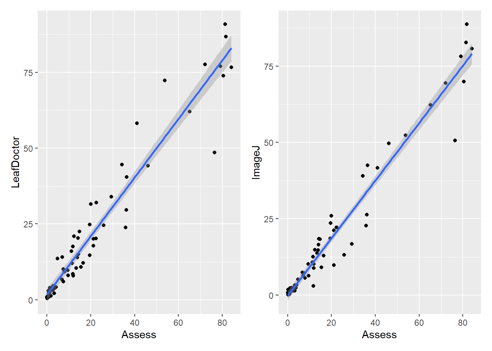

#install.packages("AgroR")Análise de correlação
Aula 10
A correlação é uma relação entre duas ou mais variáveis. Existe uma direção dessa associação, que pode ser forte ou fraca. Ela pode ser linear e positiva. A força da associação está relacionada com a dispersão dos dados, quanto mais disperso os dados mais fraca é a asociação. Então, um dos coeficientes que pode estimar isso é o coeficiente de correlação de Pearson. Quanto mais disperso, mais próximo de zero fica o coeficiente. Ela pode ser negativa quando uma varíaveld diminui em função da outra (ex: produtividade x doença), existindo uma relação de causa/efeito. É usada quando você obtém respostas diferentes e que analisar se existe uma correlação entre as variaveis respostas. Pode ser feita regressão quando o objetivo é predizer y em função de x. Pode chegar em um coeficiente de correlação através de uma análise de regressão, o quanto que a variação de y é explicada pelo x.
R2 = o quanto da variação de y é explicada pelo x R= a força de associação
library(tidyverse)
library(gsheet)
imgs <- gsheet2tbl("https://docs.google.com/spreadsheets/d/1bq2N19DcZdtax2fQW9OHSGMR0X2__Z9T/edit#gid=373270992")
imgs |>
pivot_longer(3:5, names_to = "method",
values_to = "value") |>
ggplot(aes(method, value)) +
geom_boxplot()
imgs1 <- imgs |>
ggplot(aes(Assess, LeafDoctor)) +
geom_point() +
geom_smooth(method = "lm")
imgs1
imgs2 <- imgs |>
ggplot(aes(Assess, ImageJ)) +
geom_point() +
geom_smooth(method = "lm")
imgs2library(patchwork)
imgs1 + imgs2
Ele faz uma matriz de correlação Cor entrega o coeficiente de correlação de pearson. O cor test da uma estatística mais completa. 0,96 é bem próximo de um, então indica uma correlação forte. Quanto maior a correlação menor o p-valor, se os dados forem mais dispersos o p-valor vai ser maior e não vai ser significativo. O corgraph é um pacote que indica a correlação entre as respostas da análise. Os valores dentro da matriz irão indicar o coeficiente de correlação entre as varíaveis observadas.
imgs3 <- imgs |>
select(3:5)
library(AgroR)
corgraph(imgs3) Var1 Var2 cor p
2 LeafDoctor Assess 0.9666367 5.972544e-42
3 ImageJ Assess 0.9776918 8.143613e-48
6 ImageJ LeafDoctor 0.9797478 3.144091e-49
cor.test(imgs$Assess, imgs$LeafDoctor)
Pearson's product-moment correlation
data: imgs$Assess and imgs$LeafDoctor
t = 31.119, df = 68, p-value < 2.2e-16
alternative hypothesis: true correlation is not equal to 0
95 percent confidence interval:
0.9466882 0.9792005
sample estimates:
cor
0.9666367 cor(imgs$Assess, imgs$LeafDoctor)[1] 0.9666367library(corrplot)
cor_imgs2 <- cor(imgs3)
corrplot(cor_imgs2, method = "number", type = "lower", diag = FALSE) 
library(tidyverse)
campo <- gsheet2tbl("https://docs.google.com/spreadsheets/d/1bq2N19DcZdtax2fQW9OHSGMR0X2__Z9T/edit#gid=866852711")
campo2 <- campo |>
select (DFC, FER, PROD)
library(AgroR)
corgraph(campo2) Var1 Var2 cor p
2 FER DFC 0.9316978 9.864101e-15
3 PROD DFC -0.6928161 1.110652e-05
6 PROD FER -0.6258321 1.277444e-04
campo |>
ggplot(aes(DFC, PROD)) +
geom_point()
O modelo quadratico é um experimento melhor do que o de primeira ordem, explica melhor o que vemos no gráfico anterior e a variação dos desvios. Pode ser utilizado essa variação, predizer o numero de plantas afetadas. y = (66,3 - 1,77trat) + (0,02trat^2) : equação do modelo
estande <- gsheet2tbl("https://docs.google.com/spreadsheets/d/1bq2N19DcZdtax2fQW9OHSGMR0X2__Z9T/edit#gid=401662555")
estande |>
ggplot(aes(trat, nplants, color = factor (exp))) +
geom_boxplot() +
facet_wrap(~ exp) +
theme_bw() +
stat_summary(fun.data = "mean_cl_boot", size = 0.5,
color = "black")estande |>
ggplot(aes(trat, nplants, color = factor (exp))) +
geom_jitter(width = 0.1, alpha = 0.2) +
facet_wrap(~exp) +
theme_bw() +
stat_summary(fun.data = "mean_cl_boot", size = 0.5,
color = "black") +
geom_smooth(method = "lm", se = F)exp2 <- estande |>
filter (exp == 2)
exp2 |>
ggplot(aes(trat, nplants)) +
geom_point() +
ylim(0,100) +
geom_smooth(method = "lm", se = F, formula = y ~poly(x,2), color = "black") +
geom_smooth(method = "lm",
se = FALSE)
#MODELO LINEAR
exp2$trat2 <- exp2$trat^2
#primeira ordem
lm2 <- lm(nplants ~ trat,
data = exp2)
summary(lm2)
Call:
lm(formula = nplants ~ trat, data = exp2)
Residuals:
Min 1Q Median 3Q Max
-25.7816 -7.7150 0.5653 8.1929 19.2184
Coefficients:
Estimate Std. Error t value Pr(>|t|)
(Intercept) 60.9857 3.6304 16.798 4.93e-14 ***
trat -0.7007 0.1605 -4.365 0.000247 ***
---
Signif. codes: 0 '***' 0.001 '**' 0.01 '*' 0.05 '.' 0.1 ' ' 1
Residual standard error: 12.95 on 22 degrees of freedom
Multiple R-squared: 0.4641, Adjusted R-squared: 0.4398
F-statistic: 19.05 on 1 and 22 DF, p-value: 0.0002473hist(residuals(lm2))
#segunda ordem
lm3 <- lm(nplants ~ trat + trat2,
data = exp2)
summary(lm3)
Call:
lm(formula = nplants ~ trat + trat2, data = exp2)
Residuals:
Min 1Q Median 3Q Max
-25.439 -6.019 1.789 8.016 19.561
Coefficients:
Estimate Std. Error t value Pr(>|t|)
(Intercept) 66.30156 4.42097 14.997 1.08e-12 ***
trat -1.77720 0.58467 -3.040 0.00623 **
trat2 0.02223 0.01166 1.906 0.07036 .
---
Signif. codes: 0 '***' 0.001 '**' 0.01 '*' 0.05 '.' 0.1 ' ' 1
Residual standard error: 12.24 on 21 degrees of freedom
Multiple R-squared: 0.5432, Adjusted R-squared: 0.4997
F-statistic: 12.49 on 2 and 21 DF, p-value: 0.0002675hist(residuals(lm3))
AIC(lm2)[1] 194.9597AIC(lm3)[1] 193.1284library(AgroR)
with(exp2, polynomial(trat, nplants, grau = 3))
----------------------------------------------------
Regression Models
----------------------------------------------------
Estimate Std. Error t value Pr(>|t|)
(Intercept) 70.265143802 5.300440019 13.256474 2.295186e-11
trat -3.609380523 1.514625525 -2.383018 2.720299e-02
I(trat^2) 0.140522077 0.091192577 1.540938 1.390058e-01
I(trat^3) -0.001712445 0.001309648 -1.307561 2.058546e-01
----------------------------------------------------
Deviations from regression
----------------------------------------------------
Df SSq MSQ F p-value
Linear 1 3196.2031 3196.2031 21.8232929 0.0001899378
Quadratic 1 544.5029 544.5029 3.7178008 0.0697619482
Cubic 1 247.7520 247.7520 1.6916208 0.2097934169
Deviation 2 261.9170 130.9585 0.8941691 0.4263523326
Residual 18 2636.2500 146.4583 [[1]]
#library(agro3)
#data("phao")
#with(phao, polynomial(dose, comp, grau = 2))library(gsheet)
pyra <- gsheet2tbl("https://docs.google.com/spreadsheets/d/1bq2N19DcZdtax2fQW9OHSGMR0X2__Z9T/edit#gid=465348652")
library(tidyverse)
pyra |>
group_by(code, dose) |>
summarise(mean_germination = mean(germination)) |>
ggplot(aes(dose, mean_germination)) +
geom_point() +
facet_wrap(~code) +
labs(y = "Germination",
x = "Dose")pyra2 <- pyra |>
group_by(code, dose) |>
summarise(mean_germination = mean(germination))
library(drc)
isolado186 <- pyra2 |>
filter(code == "186")
drc1 <- drm(mean_germination ~ dose, data = isolado186,
fct = LL.3())
AIC(drc1)[1] 21.11219plot(drc1)ED(drc1, 50, interval = "delta")
Estimated effective doses
Estimate Std. Error Lower Upper
e:1:50 0.579757 0.013332 0.537328 0.622187summary(drc1)
Model fitted: Log-logistic (ED50 as parameter) with lower limit at 0 (3 parms)
Parameter estimates:
Estimate Std. Error t-value p-value
b:(Intercept) 4.997636 0.542650 9.2097 0.002708 **
d:(Intercept) 48.750109 0.721642 67.5545 7.148e-06 ***
e:(Intercept) 0.579757 0.013332 43.4853 2.677e-05 ***
---
Signif. codes: 0 '***' 0.001 '**' 0.01 '*' 0.05 '.' 0.1 ' ' 1
Residual standard error:
1.020525 (3 degrees of freedom)library(ec50estimator)
df_ec50 <- estimate_EC50(mean_germination ~ dose,
data = pyra2,
isolate_col = "code",
interval = "delta",
fct = drc::LL.3())
df_ec50 |>
ggplot(aes(reorder(ID, Estimate), Estimate)) +
geom_point() +
geom_errorbar(aes(ymin = Lower, ymax= Upper), width = 0.1) +
coord_flip()
library(ec50estimator) #Permite estimar o ec50 de todos os isolados ao mesmo tempo
df_ec50 <- estimate_EC50(mean_germination ~ dose,
data = pyra2,
isolate_col = "code",
interval = "delta",
fct = drc::LL.3())
df_ec50 ID strata Estimate Std..Error Lower Upper
1 152 0.44435629 0.077789240 0.196796213 0.6919164
2 153 0.20379664 0.042373512 0.068945217 0.3386481
3 164 0.50775844 0.047248266 0.357393370 0.6581235
4 165 0.55839613 0.114195113 0.194976315 0.9218159
5 169 0.14722311 0.009555688 0.116812646 0.1776336
6 170 0.37503889 0.043207328 0.237533889 0.5125439
7 186 0.57975744 0.013332268 0.537328208 0.6221867
8 187 0.21563338 0.036639446 0.099030315 0.3322365
9 188 0.15297172 0.004284691 0.139335920 0.1666075
10 189 0.53106193 0.023130936 0.457448972 0.6046749
11 FGT05 0.04483862 0.019290890 -0.016553601 0.1062308
12 FGT06 0.54497946 0.034834602 0.434120211 0.6558387
13 FGT07 0.88770053 0.079917704 0.633366725 1.1420343
14 FGT28 0.22608141 0.033600742 0.119148854 0.3330140
15 FGT29 0.23601652 0.034933881 0.124841318 0.3471917
16 FGT33 0.10481627 0.013065221 0.063236910 0.1463956
17 FGT34 0.14773114 0.047003373 -0.001854568 0.2973169
18 FGT35 0.20315392 0.038984604 0.079087515 0.3272203
19 FGT42 0.45000559 0.059685890 0.260058448 0.6399527
20 FGT43 0.49589549 0.060850771 0.302241178 0.6895498#Se a ec50 for maior, menos sensível é o isolado (nesse caso ao fungicida)
df_ec50 |>
ggplot(aes(reorder(ID, Estimate), Estimate))+
geom_point()+
geom_errorbar(aes(ymin = Lower, ymax = Upper))+
coord_flip()